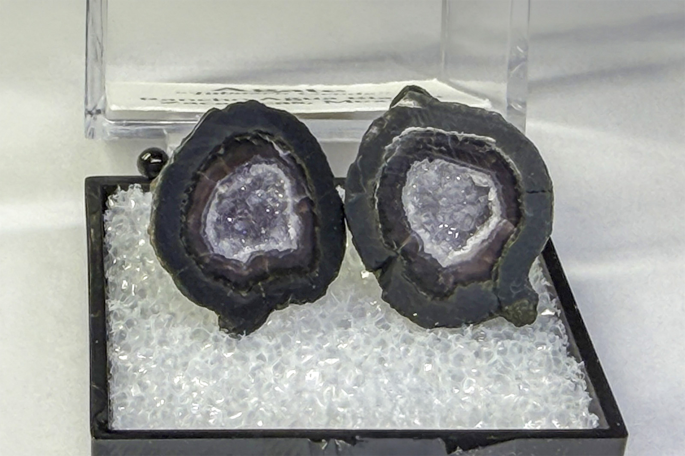

Quartz
"Tabasco Geode Pair TN 04"
VIII-02864
Rancho Agua Blanca, Tabasco Municipality, Zacatecas, Mexico
Purchased 1/8/2025 from Black Cat Rocks and Minerals for $2.63
Core Collection • In Collection
Details
Storage Type: Unassigned
Storage Location: 000 None
Size class: Cabinet (0)
Dimensions: Unrecorded
Mass: Unrecorded
Luster: Unrecorded